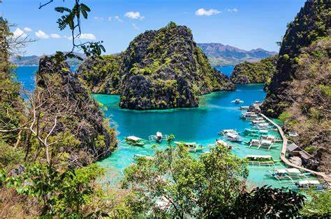
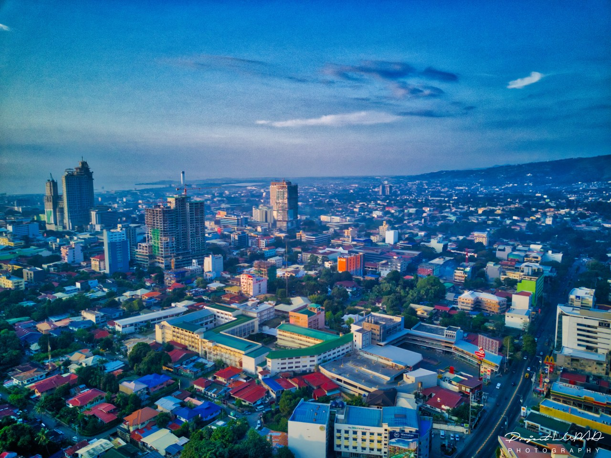

El Nido
El Nido é formada por 45 ilhas paradisíacas e uma charmosa vila de pescadores. Um paraíso ainda pouco explorado no norte de Palawan.

Coron
Coron encanta com paisagens naturais, águas cristalinas e biodiversidade. Ideal para mergulho, snorkeling e ecoturismo.

Cidade de Cebu
Cebu, a segunda maior cidade das Filipinas, combina modernidade e tradições culturais. Um destino rico em história e diversidade.